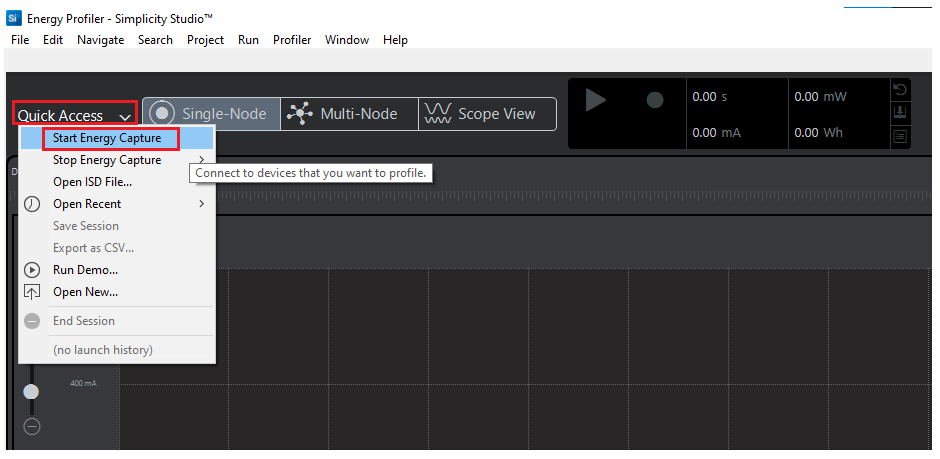
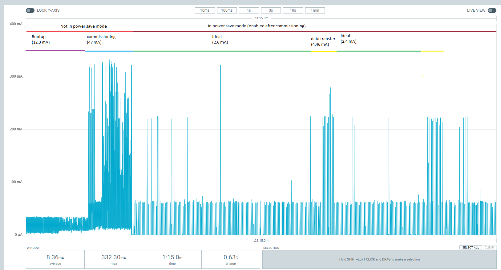

Power Measurements for Wi-Fi Devices
This page explains how to measure the power values for EFR and Wi-Fi co-processor.
EFR32 + RS9116 Setup for Sleepy Devices

Note: The following GPIO pins should be connected for 9116 and Host handshakes.
pin 7 and 9 to UULP_2 and UULP_0 respectively.
Using Simplicity Studio Energy Profiler for Current Measurement
After flashing the Matter application to the module, Energy profiler or a power meter can be used for power measurements.

In Simplicity Studio, click Tools on the toolbar, select Energy Profiler, and click “OK”.

From the Quick Access or Profiler menu, select ‘Start Energy Capture’.

Note: A quick-start guide on the Energy Profiler user interface is in the Simplicity Studio User’s Guide’s Energy Profiler User Interface section.
Power Consumption Measurment (EFR) Using Energy Profiler
Analyze the power values using Energy Profiler.

Power Consumption mMasurment Using a Power Meter
Power Consumption Measurement Pins for RS9116 Evk Boards

Power Consumption Measurement Pins for EXP Boards

The power meter’s negative probe is used for pin-1 and the positive probe is used for pin-2.
Analyze the power values using the power meter. 